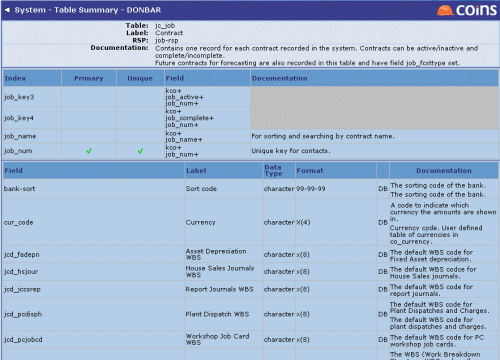
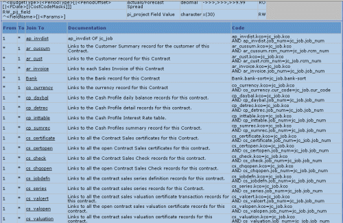

Database
To assist users in Open Architecture to understand and exploit the database schema when creating and reports a powerful tool has been developed which provides information on all tables, fields and formats.
The Database provides detailed information on the structure of every table in the database.

It also provides field information, descriptions, formats as well as documentation supplied by the Development Team to support users in creating their queries. This includes all calculated fields available via the RSPs (Record Service Procedures).

In addition the Database will provide the links available to associated tables and also provide the syntax required to build a query to create these links within Page and Report Designer.